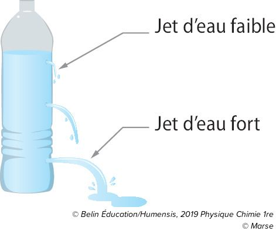

Chapitre 2 : Dosage Spectrophotométrique
La Spectrophotométrie UV-Visible
Le domaine de longueur d'onde Visible : 400nm à 800nmLe domaine de longueur d'onde des UV : 200nm à 400nm
La lumière blanche est une superposition de lumières colorées, on dit qu'elle est polychromatique.
Les spectres d'absorption
Un milieu dispersif est un milieu transparent dont l'indice de réfraction dépend de la longueur d'onde.Les spectres de raies

Les spectres de bandes
Ces différents spectres permettent d'identifier les entités chimiques . Ils sont caractéristiques d'un élément chimique
La loi de Beer-Lambert
La loi : A = ε x L x COn peut aussi écrire la loi sous la forme:
A = k x c
La loi permet de calculer l'absorbance
La loi de Beer-Lambert est seulement vérifié si la concenration en quantité de matière de la solution est inférieur à 3,00.10-3mol.L-1
Caractéristiques d'une espèce colorée
La couleur d'une espèce chimique est la couleur complémentaire sur l'étoile chromatique
Lorsqu'une espèce chimique absorbe plusieurs couleurs, sa couleur est la synthèse soustractive ou additive des couleurs complémentaires.

Dosage spectrométrique
Un dosage en étalonnage : Trouver la concentration en masse ou en quantité de matière d'une espèce E dans une solution S.Si on a plusieurs solution de concentration connu, on peut trouver une concentration inconnu.
En trouvant l'absorbance des concentration connu, on peut trouver une constante qui vérifie la loi de Beer-Lambert : A = k x c.
On peut ensuite utiliser l'absorbance de la solution inconnu et la placer sur la droite dessiner grâce au concentration connu.

Chapitre 3 : Description d'un fluide au repos
Description miscroscopique d'un fluide
| État physique | Solide | Liquide | Gaz |
|---|---|---|---|
| Modélisation |  |
||
| Description de l'état | Compact, ordonné | Compact, désordonné | Désordonné, dispersé |
Puisque les entités d'un fluide sont caractérisé par un mouvement désordonné et incessant, les liquides et les gaz sont des fluides
Grandeurs macroscopiques de descriptions d'un fluide au repos
Pour caractérisé un gaz, on va utiliser 3 grandeurs macroscopiques:ρeau = 1.103kg.m-3
ρair = 1kg.m-3
La température est représentée par des vecteurs vitesse. À 0K, le zéro absolu, les entités sont immobiles et donc à leur plus froid
La pression est une grandeur macroscopique qui mesure le nombre de chocs qu'un fluide exerce sur une surface donnée.
Plus de choc = plus de pression
Action d'un fluide sur une surface
 Sur cette image, on remarque que la vitesse du jet change en fonction de la hauteur du trou et que les jets sont perpendiculaires à la paroi de la bouteille.La force pressante se note : Fa/b où a agit sur b.
 Lorsqu'on a le vide à l'intérieur de la cloche à vide (b), le ballon gonfle, puisque à l'intérieur du ballon, les molécules d'air exerce la même force pressante que lorsqu'il y avait de l'air dans la cloche à vide (a). Puisqu'il n'y a plu d'air dans la cloche à vide pour compenser, le ballon gonfle.
Lorsqu'on a le vide à l'intérieur de la cloche à vide (b), le ballon gonfle, puisque à l'intérieur du ballon, les molécules d'air exerce la même force pressante que lorsqu'il y avait de l'air dans la cloche à vide (a). Puisqu'il n'y a plu d'air dans la cloche à vide pour compenser, le ballon gonfle. Plus la force pressante est grande, plus la pression est grande
Plus la la surface est grande, plus la force pressante est grande
Donc : F = P x S
Les caractéristiques de la force pressante :
Pression dans un fluide incompressible au repos
La loi fondamentale de la statique des fluides au repos et incompressible (donc pas les gaz):PB - PA = ρ x g x (zA - zB)

La pression atmosphérique Patm est égale à 101 325 Pa
Pression dans un gaz
La loi de Mariotte:V = k x
1
P
V1 x P1 = V2 x P2